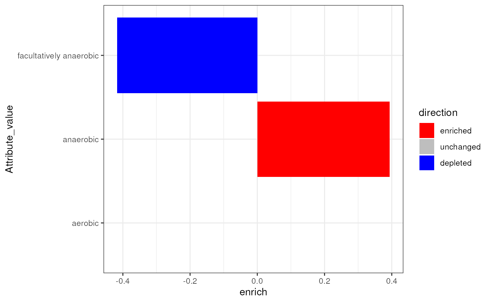

library(bugphyzzAnalyses)
library(bugsigdbr)
library(bugphyzz)
library(dplyr)
library(purrr)
library(tidyr)
library(ggplot2)
## Function to get signatures with two directions (UP and DOWN)
getPairedSignatures <- function(sigL) {
sig_names <- sigL |>
names() |>
tibble::tibble(x = _) |>
mutate(y = sub("_(DOWN|UP)$", "", x)) |>
mutate(id = sub("^(bsdb:\\d+/\\d+/\\d+)_(.*)$", "\\1", y)) |>
mutate(name = sub("^(bsdb:\\d+/\\d+/\\d+)_(.*)$", "\\2", y)) |>
group_by(name) |>
mutate(count = n()) |>
ungroup() |>
filter(count == 2) |>
pull(x) |>
unique()
output <- sigL[sig_names]
output
}
## Convert the list of signatures to a data.frame
## Also adds a size column
sigs2Tbl <- function(sigL) {
sigL |>
imap( ~{
df <- as.data.frame(.x)
colnames(df) <- sub("^.*(UP|DOWN)$", "\\1", .y)
df
}) |>
bind_rows(.id = "sig_name") |>
pivot_longer(
names_to = "direction", values_to = "taxid", cols = c(UP, DOWN)
) |>
drop_na() |>
mutate(taxid = as.integer(taxid)) |>
mutate(bsdb_id = sub(
"^(bsdb:\\d+/\\d+/\\d+)_(.*)$",
"\\1",
sig_name
)) |>
mutate(
base_name = sub(
"^(bsdb:\\d+/\\d+/\\d+)_(.*)_(UP|DOWN)$",
"\\2",
sig_name
)
) |>
group_by(base_name, direction) |>
mutate(size = n()) |>
ungroup()
}
## Function for annotating signatures
annotateSigs <- function(x, y) {
ann <- select(y, NCBI_ID, Taxon_name, Attribute_value, Score)
annotated <- left_join(
x, ann, by = c("taxid" = "NCBI_ID"), relationship = "many-to-many"
) |>
filter(!is.na(Attribute_value))
annotated
}
## Calculate enrichment
calcEn <- function(x) {
l <- split(x, x$direction)
if ("UP" %in% names(l) & "DOWN" %in% names(l) ) {
sizes <- map_int(l, ~ unique(.x$size))
sum_scores <- map_dbl(l, ~ sum(.x$Score, na.rm = TRUE))
up <- sum_scores[["UP"]] / sizes[["UP"]]
down <- sum_scores[["DOWN"]] / sizes[["DOWN"]]
res <- up - down
x$enrich <- round(res, 3)
return(x)
} else {
return(NULL)
}
}
bp <- importBugphyzz()
#> Importing multistate data...
#> Using data downloaded on 2024-03-28 14:30:39.
#> Importing binary data...
#> Using data downloaded on 2024-03-28 14:30:49.
#> Importing numeric data...
#> Using data downloaded on 2024-03-28 14:30:51.
bsdb <- importBugSigDB() |>
filter(`Host species` == "Homo sapiens") |>
filter(`Abundance in Group 1` %in% c("increased", "decreased"))
#> Using cached version from 2024-03-28 14:30:27
sig_data <- getSignatures(
df = bsdb, tax.id.type = "ncbi", min.size = 5, tax.level = "genus"
) |>
getPairedSignatures() |>
sigs2Tbl()
sig_data_aer <- annotateSigs(sig_data, bp$aerophilicity) |>
{\(y) split(x = y, f = y$base_name)}() |>
map(~ split(.x, .x$Attribute_value)) |>
list_flatten()
enrichment <- map(sig_data_aer, ~ calcEn(.x)) |>
discard(is.null) |>
bind_rows() |>
select(-taxid, -Taxon_name, -Score, - size) |>
distinct() |>
left_join(
x = _,
y = bsdb[, c("BSDB ID", "Condition")],
by = c("bsdb_id" = "BSDB ID")
) |>
select(-sig_name, -direction) |>
mutate(bsdb_id = sub("/[0-9]+$", "", bsdb_id)) |>
distinct()
smk <- enrichment |>
filter(grepl("727", bsdb_id))
smk |>
mutate(
direction = case_when(
enrich == 0 ~ "unchanged",
enrich > 0 ~ "enriched",
enrich < 0 ~ "depleted"
)
) |>
mutate(direction = factor(direction, levels = c(
"enriched", "unchanged", "depleted"
))) |>
ggplot(aes(Attribute_value, enrich)) +
geom_col(aes(fill = direction)) +
scale_fill_manual(
values = c("red", "gray", "blue")
) +
theme_bw() +
coord_flip()
sessioninfo::session_info()
#> ─ Session info ───────────────────────────────────────────────────────────────
#> setting value
#> version R version 4.3.2 (2023-10-31)
#> os Ubuntu 22.04.3 LTS
#> system x86_64, linux-gnu
#> ui X11
#> language en
#> collate en_US.UTF-8
#> ctype en_US.UTF-8
#> tz Etc/UTC
#> date 2024-03-28
#> pandoc 3.1.1 @ /usr/local/bin/ (via rmarkdown)
#>
#> ─ Packages ───────────────────────────────────────────────────────────────────
#> package * version date (UTC) lib source
#> BiocFileCache 2.10.1 2023-10-26 [1] Bioconductor
#> bit 4.0.5 2022-11-15 [1] RSPM (R 4.3.0)
#> bit64 4.0.5 2020-08-30 [1] RSPM (R 4.3.0)
#> blob 1.2.4 2023-03-17 [1] RSPM (R 4.3.0)
#> bslib 0.6.2 2024-03-22 [1] RSPM (R 4.3.0)
#> bugphyzz * 0.99.0 2024-03-28 [1] Github (waldronlab/bugphyzz@67c43a4)
#> bugphyzzAnalyses * 0.1.0 2024-03-28 [1] local
#> bugsigdbr * 1.8.4 2024-02-21 [1] Bioconductor 3.18 (R 4.3.2)
#> cachem 1.0.8 2023-05-01 [1] RSPM (R 4.3.0)
#> cli 3.6.2 2023-12-11 [1] RSPM (R 4.3.0)
#> colorspace 2.1-0 2023-01-23 [1] RSPM (R 4.3.0)
#> curl 5.2.1 2024-03-01 [1] RSPM (R 4.3.0)
#> DBI 1.2.2 2024-02-16 [1] RSPM (R 4.3.0)
#> dbplyr 2.5.0 2024-03-19 [1] RSPM (R 4.3.0)
#> desc 1.4.3 2023-12-10 [1] RSPM (R 4.3.0)
#> digest 0.6.35 2024-03-11 [1] RSPM (R 4.3.0)
#> dplyr * 1.1.4 2023-11-17 [1] RSPM (R 4.3.0)
#> evaluate 0.23 2023-11-01 [1] RSPM (R 4.3.0)
#> fansi 1.0.6 2023-12-08 [1] RSPM (R 4.3.0)
#> farver 2.1.1 2022-07-06 [1] RSPM (R 4.3.0)
#> fastmap 1.1.1 2023-02-24 [1] RSPM (R 4.3.0)
#> filelock 1.0.3 2023-12-11 [1] RSPM (R 4.3.0)
#> fs 1.6.3 2023-07-20 [1] RSPM (R 4.3.0)
#> generics 0.1.3 2022-07-05 [1] RSPM (R 4.3.0)
#> ggplot2 * 3.5.0 2024-02-23 [1] RSPM (R 4.3.0)
#> glue 1.7.0 2024-01-09 [1] RSPM (R 4.3.0)
#> gtable 0.3.4 2023-08-21 [1] RSPM (R 4.3.0)
#> highr 0.10 2022-12-22 [1] RSPM (R 4.3.0)
#> htmltools 0.5.8 2024-03-25 [1] RSPM (R 4.3.0)
#> httr 1.4.7 2023-08-15 [1] RSPM (R 4.3.0)
#> jquerylib 0.1.4 2021-04-26 [1] RSPM (R 4.3.0)
#> jsonlite 1.8.8 2023-12-04 [1] RSPM (R 4.3.0)
#> knitr 1.45 2023-10-30 [1] RSPM (R 4.3.0)
#> labeling 0.4.3 2023-08-29 [1] RSPM (R 4.3.0)
#> lifecycle 1.0.4 2023-11-07 [1] RSPM (R 4.3.0)
#> magrittr 2.0.3 2022-03-30 [1] RSPM (R 4.3.0)
#> memoise 2.0.1 2021-11-26 [1] RSPM (R 4.3.0)
#> munsell 0.5.0 2018-06-12 [1] RSPM (R 4.3.0)
#> pillar 1.9.0 2023-03-22 [1] RSPM (R 4.3.0)
#> pkgconfig 2.0.3 2019-09-22 [1] RSPM (R 4.3.0)
#> pkgdown 2.0.7 2022-12-14 [1] RSPM (R 4.3.0)
#> purrr * 1.0.2 2023-08-10 [1] RSPM (R 4.3.0)
#> R6 2.5.1 2021-08-19 [1] RSPM (R 4.3.0)
#> ragg 1.3.0 2024-03-13 [1] RSPM (R 4.3.0)
#> rlang 1.1.3 2024-01-10 [1] RSPM (R 4.3.0)
#> rmarkdown 2.26 2024-03-05 [1] RSPM (R 4.3.0)
#> RSQLite 2.3.5 2024-01-21 [1] RSPM (R 4.3.0)
#> sass 0.4.9 2024-03-15 [1] RSPM (R 4.3.0)
#> scales 1.3.0 2023-11-28 [1] RSPM (R 4.3.0)
#> sessioninfo 1.2.2 2021-12-06 [1] RSPM (R 4.3.0)
#> systemfonts 1.0.6 2024-03-07 [1] RSPM (R 4.3.0)
#> textshaping 0.3.7 2023-10-09 [1] RSPM (R 4.3.0)
#> tibble 3.2.1 2023-03-20 [1] RSPM (R 4.3.0)
#> tidyr * 1.3.1 2024-01-24 [1] RSPM (R 4.3.0)
#> tidyselect 1.2.1 2024-03-11 [1] RSPM (R 4.3.0)
#> utf8 1.2.4 2023-10-22 [1] RSPM (R 4.3.0)
#> vctrs 0.6.5 2023-12-01 [1] RSPM (R 4.3.0)
#> withr 3.0.0 2024-01-16 [1] RSPM (R 4.3.0)
#> xfun 0.43 2024-03-25 [1] RSPM (R 4.3.0)
#> yaml 2.3.8 2023-12-11 [1] RSPM (R 4.3.0)
#>
#> [1] /usr/local/lib/R/site-library
#> [2] /usr/local/lib/R/library
#>
#> ──────────────────────────────────────────────────────────────────────────────